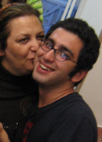

|
|
دو گفتگو درباره دستگیری مهین فهیمی از مادران صلح و فرزند و مهمانانش
چهار شنبه9 دی 1388
تغییر برای برابری - در شامگاه ششم دی ماه تعدادی از نیروهای امنیتی با مراجعه به منزل مسکونی مهین فهیمی از
 اعضای مادران صلح ایران ضمن تفتیش منزل وی و ضبط وسایل شخصی او ، فرزندش و نیز همسایگانشان اقدام به بازداشت او و مهمانانش نمودند و در روز هفتم دی ماه ، هنگامی که فرزندش امید منتظری به اداره پیگیری اطلاعات مراجعه نموده بود بازداشت گردید. در همین زمینه سایت تغییر برای برابری گفتگویی با شکوفه منتظری دختر مهین فهیمی و نیز امیر رئیسیان وکیل امید منتظری داشته است.
گفتگو با شکوفه منتظری دختر مهین فهیمی
خانم منتظری ممکن است توضیح دهید که مادر و برادر شما چگونه بازداشت شدند؟
در روز ششم دی ماه مامورین حوالی ساعت 11 شب به منزل مادرم مراجعه کردند و در حالیکه تعدادی از دوستان و اقوام ما در خانه مان مهمان بودند اقدام به تفتیش منزل نمودند و زمانی که با اعتراض مادرم مواجه شدند که از آن ها می خواست تا حکمشان را نشان دهند یکی از مامورین که ظاهرا آقای صالحی نام دارد و به گفته مادرم کسی است که او را مدتی قبل در اداره پیگیری اطلاعات مورد بازجویی قرار داده است همان جا اقدام به نوشتن حکم می کند و آن را به مادرم می دهد.مامورین تا حوالی ساعت 4 صبح در منزل مادرم می مانند و سپس تمام افرادی را که در خانه ما بودند به همراه مادرم بازداشت می کنند. صبح روز بعد برادرم برای پیگیری وضعیت پس از مشورت با وکیلشان به اداره پیگیری اطلاعات مراجعه می کنند اما متاسفاانه ایشان نیز بازداشت می شوند .
علت این بازداشت به آن ها و یا وکلایشان عنوان شده است؟
خیر، تا جایی که من پیگیری نمودم تا کنون علت بازداشت مادر و برادرم عنوان نشده است.
آیا پیش از این مادر و یا برادرتان توسط دادگاه انقلاب و یا وزارت اطلاعات احضار شده بودند؟
پس از اعدام پدرم در دهه شصت مادرم بارها احضار و بازجویی شده بود و این قضیه برای ما تازگی نداشت اما این اواخر یعنی در چند ماه گذشته مادرم چندین بار توسط اداره پیگیری اطلاعات احضار شده بود و هر بار نیز مراجعه نموده و مورد بازجویی قرار گرفته بود.این بازجویی ها عمدتا در رابطه مادران صلح بود.برادرم هم در رابطه با اعدام پدرم و مراسم خاوران سابقا احضار شده بود اما نه در ماه های اخیر.
خانم منتظری آیا شما پیش بینی می کردید که ممکن است چنین بازداشتی برای اعضای خانوادتان اتفاق بیفتد ؟یعنی آیا اخیرا تهدید به بازداشت نشده بودند؟
این قضیه برای من غیر قابل پیش بینی بود و من واقعا نمی دانم چرا این بازداشت آن هم به این شکل صورت گرفته است که مادرم ، برادرم و تمام کسانی را که در منزل ما بودند بازداشت نمایند.این شکل دستگیری ما را به شدت نگران کرده است.
آیا تا کنون تماسی با خانواده داشتند و شما اطلاعی در رابطه با محل بازداشت آنها دارید؟
مادرم صبح روز پس از بازداشت تماس کوتاهی داشته و فقط گفته است حالش خوب است اما در رابطه با محل بازداشتشان چیزی نگفته است.برادرم هم تا کنون تماسی نداشته است و از وضعیت او کاملا بی خبر هستیم و همین موضوع موجب نگرانی ماست.
اکنون خواسته شما و وکلایشان چیست؟
با توجه به اینکه تا کنون اتهامی نسبت به اعضای خانواده من وارد نشده است و با توجه به اینکه آن ها فعالیتی خلاف قانون نداشته اند در خواست ما این است که هر چه سریعتر آزاد شوند و برای آنها قرار منع تعقیب پرونده صادر گردد.
گفتگو با امیر رئیسیان وکیل امید منتظری
آقای رئیسیان گفته می شود که آقای منتظری در زمان بازداشت مادرشان و مهمانانی که در منزل آنان بودند در خانه حضور نداشتند،ممکن است در رابطه با نحوه بازداشت ایشان توضیح دهید؟
ماموران امنیتی شب ششم دی ماه به منزل آقای منتظری مراجعه نموده و ضمن تفتیش و ضبط وسایل شخصی ایشان ، مادرشان و نیز یکی از همسایگان بدون ارائه هیچ اتهامی اقدام به بازداشت تمام افراد حاضر در منزل می کنند (که این خود جای سئوال دارد چرا که 3 نفر از افراد حاضر در منزل از مهمان آنان و از اقوام و نزدیکانشان بوده اند) و در آن زمان ایشان در منزل نبوده اند ، ایشان صبح روز بعد و به دلیل انکه در زمان بازداشت مادرشان در رابطه با عدم حضور او در منزل سئوالاتی شده بود خودشان به اداره پیگیری اطلاعات مراجعه کردند تا سوء تفاهمی در رابطه با عدم حضور ایشان در منزل صورت نگیرد چرا که موکل من اصولا جرمی مرتکب نشده است و دلیلی ندارد که در رابطه با دستگیری مادر و سایر اقوامشان پیگری های لازم را انجام ندهد.اما متاسفانه ایشان پس از مراجعه به اداره پیگیری اطلاعات در روز هفتم دی ماه بازداشت شدند.
آیا این شکل بازداشت قانونی است؟
متاسفانه موکل من با حسن نیت کامل در اداره پیگیری اطلاعات حاضر شدند اما بدون آنکه اتهامی عنوان شود و یا از قبل احضاریه و اخطاریه ای به وی داده شود بازداشت گردید .
شما دلیل این بازداشت را چه می دانید؟
با شناختی که من از موکلم دارم ایشان فعالیتی خلاف قانون انجام نداده است و فعالیت های ایشان در حوزه دانشگاه و در قالب نوشتن مقالاتی در نشریات دانشجویی بوده است در حال حاضر با توجه به اینکه اتهامی نیز در رابطه با ایشان مطرح نگردیده است علت بازداشت ایشان برای من هم روشن نیست و امیدوارم هر چه سریع تر به همراه مادرشان و نیز مهمانانی که در خانه آن ها بوده اند آزاد شده و قرار منع تعقیب در رابطه با پرونده شان صادر گردد.
آیا اطلاعی در رابطه با وضعیت فعلی ایشان دارید؟}
}
خیر، متاسفانه موکلم تا کنون هیچ تماسی با من یا خنواده شان نداشته اند و ما در رابطه با وضعیت فعلی و محل بازداشت ایشان اطلاعی در دست نداریم و امیدواریم هر چه سریعتر دستگاه قضایی اقدام مقتضی در این رابطه را انجام دهد.